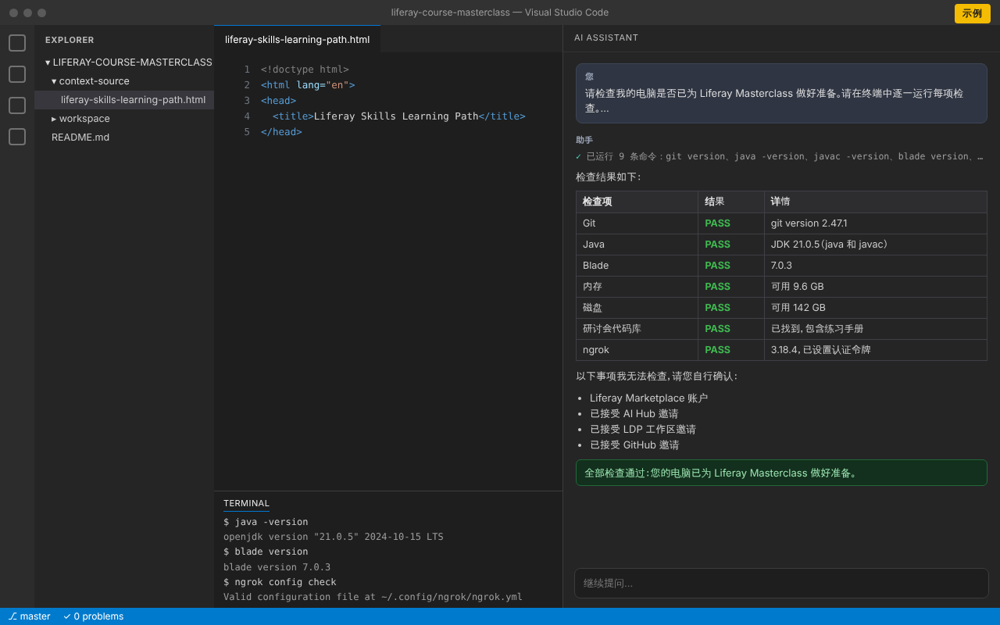

准备电脑
请安装并检查以下各项。请在出发前完成，以免依赖会场的 Wi-Fi。请在终端中运行命令：Mac 或 Linux 上使用“终端”，Windows 上使用命令提示符或 PowerShell。
依据 Liferay 的课堂培训准备事项（英文）。
-
任意较新版本即可。这一步不需要 GitHub 账户。
安装方法
Windows
从 git-scm.com 安装 Git for Windows，或运行下面的命令。安装时，请选择可从命令行及第三方软件中使用 Git。
winget install --id Git.Git -emacOS
运行下面的命令，在 macOS 提示时点击安装。如果使用 Homebrew，也可以运行
brew install git。xcode-select --installLinux
Ubuntu 或 Debian：
sudo apt install git检查
git version应该看到类似以下内容：
git version 2.44.0 -
需要 JDK（不仅是 JRE），版本显示为 21.x。
安装方法
Windows
安装 Microsoft Build of OpenJDK 21：
winget install Microsoft.OpenJDK.21macOS
使用 Homebrew：
brew install --cask microsoft-openjdk@21Linux
Ubuntu 或 Debian：
sudo apt install openjdk-21-jdk想使用 ZIP 或 TAR.GZ？从 Microsoft 下载 OpenJDK 21，解压到任意文件夹，并将环境变量
JAVA_HOME设置为该文件夹，然后打开新的终端。如果java -version显示其他版本，请将JAVA_HOME设置为 JDK 21 文件夹，并把它的bin文件夹放在PATH的最前面。检查
java -version javac -version应该看到类似以下内容：
openjdk version "21.0.5" 2024-10-15 LTS OpenJDK Runtime Environment Microsoft-10377968 (build 21.0.5+11-LTS) OpenJDK 64-Bit Server VM Microsoft-10377968 (build 21.0.5+11-LTS, mixed mode, sharing) javac 21.0.5 -
7.0 或更高版本（在 JDK 21 上使用 Liferay DXP 所需）。请先安装 JDK。
安装方法
macOS 和 Linux
运行下面的命令。显示“Blade installed successfully”后，打开新的终端。如果找不到
blade，请将安装程序显示的文件夹添加到PATH。curl -L https://raw.githubusercontent.com/liferay/liferay-blade-cli/master/cli/installers/local | shWindows
下载并运行 Liferay Project SDK 安装程序：它会自动检测 Java，并将
blade添加到PATH。如果使用 Git Bash，也可以运行 macOS 和 Linux 的命令。如果版本低于 7.0，请更新：
blade update检查
blade version应该看到类似以下内容：
blade version 7.0.3 -
足以在研讨会期间在您的电脑上运行 Liferay DXP。当天请关闭其他占用资源较多的应用程序。
-
提前学习 Liferay Learn 上对应的学习路径，能让研讨会进展更快、内容更深入。
安装工具
您将在 VS Code 中使用 Liferay Workspace，并由 AI 助手协助工作。请先安装 VS Code，再安装您可以使用的 AI 助手：一个就够了，勾选任意一个即完成此步骤。
-
使用 VS Code 可以轻松处理您的 Liferay Workspace。
-
安装扩展后，您就可以在 VS Code 中随时使用 Claude。
-
OpenAI 的编程智能体 Codex 包含在您的 ChatGPT 套餐中：请用您的 ChatGPT 账户登录扩展。
-
请用拥有 Copilot 使用权限的 GitHub 账户登录 VS Code。
创建账户
请使用您报名研讨会时的电子邮件地址注册。
-
AI Hub 和 LDP 都需要通过公共 URL 访问您的 Liferay DXP 实例，而 ngrok 提供这个 URL。请使用您的电子邮件地址创建账户，以便我们将您加入 Liferay Enablement 的 ngrok 账户。
-
用于下载 CMP/DSR 的新产品许可证文件。
接受邀请
研讨会前您会收到以下邀请。收到后请逐一接受；如果没有收到，请检查垃圾邮件文件夹。
-
加入培训用 AI Hub 的邀请。
-
加入培训用 LDP 工作区的邀请。
-
加入代码库的邀请，其中包含您要测试的练习手册及其参考资料。接受邀请前，打开链接会显示“Page not found”。接受后，请克隆代码库：
git clone https://github.com/liferay/liferay-course-masterclass.git
打开练习手册
练习手册是研讨会期间您要按步骤完成的指南。
-
它位于研讨会代码库的
context-source/liferay-skills-learning-path.html。可从您克隆的文件夹中打开，或在获得访问权限后在 GitHub 上打开。
用 AI 助手检查一切
让您在第 2 步中安装的 AI 助手帮您检查准备情况。它会在终端中运行检查，并告诉您哪些已通过、哪些需要修复。
- 在 VS Code 中，打开您克隆的研讨会代码库文件夹（File → Open Folder）。
- 打开 AI 助手的聊天：
- Claude Code: 点击 Claude 图标，或在命令面板中运行 Claude Code: Open。
- OpenAI Codex: 点击侧边栏中的 Codex 图标。
- GitHub Copilot: 打开 Chat 视图并将模式切换为 Agent，以便 Copilot 运行命令。
- 复制下面的提示词，粘贴到聊天中并发送。当助手请求运行命令时，请允许：这些检查只读取信息。
请检查我的电脑是否已为 Liferay Masterclass 做好准备。请在终端中逐一运行每项检查。不要安装或更改任何内容。 1. Git：运行 `git version`。已安装 Git 则为 PASS。 2. Java：运行 `java -version` 和 `javac -version`。两者都显示 21.x 版本（是 JDK，而不只是 JRE）则为 PASS。 3. Blade：运行 `blade version`。7.0 或更高版本则为 PASS。 4. 内存：检查可用内存。至少 4 GB 可用则为 PASS。 5. 磁盘：检查我的主文件夹所在驱动器的可用空间。至少 10 GB 可用则为 PASS。 6. 研讨会代码库：在打开的文件夹或我的主文件夹中查找 github.com/liferay/liferay-course-masterclass 的克隆。存在且包含 context-source/liferay-skills-learning-path.html 则为 PASS。 7. ngrok：运行 `ngrok version` 和 `ngrok config check`。已安装 ngrok 且设置了认证令牌则为 PASS，否则为 WARN。 然后用中文以表格显示结果，列为“检查项”“结果”（PASS、WARN 或 FAIL）和“详情”。对于未通过的项目，请告诉我如何修复。 最后，列出你无法检查、需要我自己确认的事项：我的 Liferay Marketplace 账户，以及 AI Hub、LDP 工作区和 GitHub 的邀请。

-
运行下面的检查，修复标记为 FAIL 或 WARN 的项目，然后重新运行，直到全部通过。最后确认它列出的账户和邀请。
遇到问题，或没有收到邀请？请联系研讨会组织者，或参阅获取帮助。